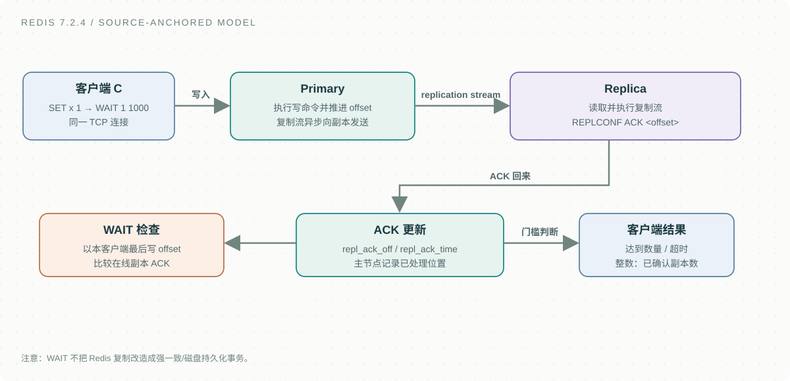
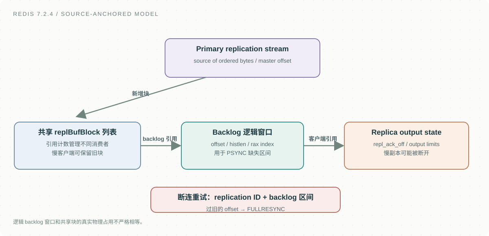
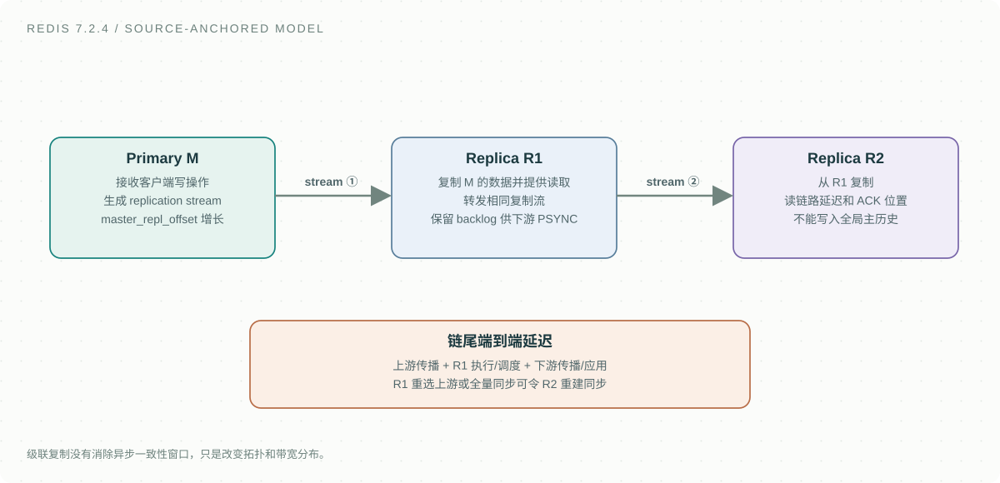

Chapter 21 / Redis 7.2.4 Source Anatomy
复制工程细节：ACK、背压、级联与重连
从 REPLCONF ACK、WAIT 与写入门槛，到共享复制缓冲、慢副本、级联链路及 PSYNC 回退，解释 Redis 7.2.4 为什么会出现复制滞后和反复全量同步。
副本显示 connected，为什么读取还是落后？
Redis 复制是一个持续移动的字节流，而不是一个永远同步的状态开关。主节点已写入某个 key、复制字节已放入输出缓冲、副本收到该字节、副本实际执行写命令、副本发出 ACK，这些时刻可能互不相同。master_link_status:up 只说明连接与复制状态，不证明数据已经追到最新字节，也不保证数据已写到副本磁盘。
要分析问题，应同时记录主节点的 master_repl_offset、副本的 slave_repl_offset、主节点看到的 slave0:offset,lag，以及二者的观测时间。单次采样的 offset 差值只是瞬时落后规模，不能直接除以 QPS 换算“精确延迟秒数”：协议字节长度、写流速率和网络调度都在变化。

REPLCONF ACK：记录已处理的复制流位置
在 Redis 7.2.4 的 replication.c 中，副本会调用 replicationSendAck() 发送自己已处理的复制 offset；主节点的 replconfCommand() 处理 REPLCONF ACK，更新对应客户端的 repl_ack_off 和 repl_ack_time。复制方向与应用进度很重要：主节点只是写出了字节，并不意味着副本已经确认处理到相同 offset。
Redis 7.2 还允许 REPLCONF ACK offset FACK aof-offset 类的同步持久化反馈，但应把确认复制应用位置和确认 AOF fsync 位置分开理解。普通的 WAIT 核验的是复制 ACK，不是以 fsynced_reploff 为依据的磁盘持久化协议。
/* 7.2.4：关键字段和控制关系 */
master_repl_offset // 主节点复制字节流当前位置
slave->repl_ack_off // 主节点最近收到的副本 ACK offset
slave->repl_ack_time // 最近收到 ACK 的时间
REPLCONF ACK <offset> // 副本确认已处理的复制流字节
WAIT n timeout_ms // 客户端确认门槛（非共识、非回滚）当 repl_ack_off 不再前进时，要区分主节点没有新增写入、副本应用阻塞、网络包无法送达、复制连接断开等情况。只有结合 INFO replication、网络指标和节点日志，才能缩小根因。
WAIT 与 min-replicas-to-write 是两种不同防护
客户端发送 WAIT 1 1000 时，Redis 检查这个客户端此前写入对应的复制 offset 被多少副本 ACK。达到指定数量时提前回复，否则最多等待超时时间，最终返回已经确认的副本数量。返回 0 不会撤销之前已执行成功的 SET；WAIT 也不能保证故障切换时该写入必然保留。
min-replicas-to-write 和 min-replicas-max-lag 则是主节点的写入安全阀：由 refreshGoodSlavesCount() 统计处于 ONLINE、最近 ACK 时间未超出阈值的副本；checkGoodReplicasStatus() 判断数量是否满足最低要求。不满足时新写命令可能被拒绝并返回 NOREPLICAS，而不是像 WAIT 一样等待指定客户端之前的 offset。
| 机制 | 关注的状态 | 结果与限制 |
|---|---|---|
WAIT | 本客户端写入的 offset，被多少副本确认 | 返回数量；未满足不回滚，不能替代持久化 |
min-replicas-to-write | ONLINE 且 ACK 时间 lag 达标的副本个数 | 不足时拒绝部分写操作；不是逐条写入确认 |
INFO replication | 主/副本角色、offset、link 与 lag 等快照 | 诊断证据，不是独立的数据一致性承诺 |
这是离线机制模型；它不会连接数据库，也不代表运行时测量结果。
Backlog 与复制输出缓冲：一份流、多个消费者
Redis 7.2.4 的复制缓冲不是旧版文献中单独的固定数组：replBufBlock 组成共享列表，副本和 replBacklog 通过引用计数持有相应块；backlog 的逻辑保留窗口由 offset / histlen 描述，并通过 rax 索引加速 PSYNC 寻址。某个慢副本若迟迟发不出数据，可能导致旧块仍被引用，实际物理内存暂时高于配置的 backlog 上限。

复制客户端也受 client-output-buffer-limit replica 限制。硬上限或持续超过软上限可能导致客户端被断开，接着重连并尝试 PSYNC。若此时缺失的字节已经不在 backlog，便退化成 FULLRESYNC，可能再次触发 RDB 子进程与 COW 内存压力，形成性能雪崩。
因此需要一起监控 mem_not_counted_for_evict、mem_clients_slaves（具体字段以本版本 INFO 为准）、输出缓冲占用、复制 offset 与 sync_full / sync_partial_ok / sync_partial_err。不要只通过 repl-backlog-size 估算复制期间的全部内存。
级联复制：减少主节点扇出，但增加故障依赖与传播路径
副本也可以把自己的复制流转发给下游，从而形成 Primary M → Replica R1 → Replica R2 的级联。replicationFeedSlaves() 在非顶层主节点时不会重新编码“本地执行后的另一份主历史”，因为它需要转发自己从上游接收的同一条有序复制字节流；这也是副本级联能沿用同一个复制历史与 offset 语义的基础。

级联的好处是减轻原主节点同时服务大量远程副本的带宽成本；代价是链尾故障排查更复杂。R1 延迟、与 M 的失联、FULLRESYNC 或重选上游都可能影响 R2，链尾端到端滞后可能大于单跳副本。级联并不提供多主写入或同步复制事务。
评估拓扑时应记录每条链路的 master_host、master_link_status、slave_repl_offset 以及相应节点日志；不要仅在最上游主节点上看 connected_slaves 就以为已观察全部副本。
连接断开之后：缓存历史、重连与同步回退
replicationHandleMasterDisconnection() 将副本置为 REPL_STATE_CONNECT，记录断线时间并尽快重连。replicationCron() 定期处理连接/握手超时、RDB 传输超时和已连接 master 长时间无数据等情况；下一轮握手在有可用 cached master 时优先尝试基于原历史的 PSYNC。
replicationCacheMaster() 保存失联主节点的 replid、reploff 等状态，并清理未完成命令缓冲。slaveTryPartialResynchronization() 在重新握手时用 cached replid 和 reploff + 1 请求缺失区间。对方如果不识别历史或 backlog 不再覆盖缺口，则采用 FULLRESYNC；这不必然意味着 Redis 程序有 bug，它可能仅仅是断线时间超过可保留窗口。
| 症状 | 源码路径 | 下一步证据 |
|---|---|---|
| MASTER timeout | replicationCron | 副本日志、网络时延、最后收到数据时间 |
| Partial resynchronization not accepted | masterTryPartialResynchronization | replid、backlog 起点、请求 offset |
| Repeated FULLRESYNC | startBgsaveForReplication | backlog、复制缓冲限制、COW/磁盘耗时 |
| NOREPLICAS on writes | checkGoodReplicasStatus | 合格副本数、配置的 ACK lag 门槛 |
实验：单跳和级联复制、ACK 与断线恢复
实验必须使用 Redis 7.2.4 的独立临时目录和三个不同端口。以下服务使用后台模式，避免启动第一个进程后阻塞后续 shell。需要先确认端口 6391–6393 空闲。执行后请先检查三个实例均可 PING，再观察拓扑。
tmp=$(mktemp -d)
mkdir -p "$tmp/m" "$tmp/r1" "$tmp/r2"
./src/redis-server --bind 127.0.0.1 --port 6391 --dir "$tmp/m" \
--daemonize yes --pidfile "$tmp/m/pid" --logfile "$tmp/m/redis.log" \
--save "" --appendonly no --repl-backlog-size 1mb
./src/redis-server --bind 127.0.0.1 --port 6392 --dir "$tmp/r1" \
--daemonize yes --pidfile "$tmp/r1/pid" --logfile "$tmp/r1/redis.log" \
--save "" --appendonly no --replicaof 127.0.0.1 6391
./src/redis-server --bind 127.0.0.1 --port 6393 --dir "$tmp/r2" \
--daemonize yes --pidfile "$tmp/r2/pid" --logfile "$tmp/r2/redis.log" \
--save "" --appendonly no --replicaof 127.0.0.1 6392
./src/redis-cli -p 6391 INFO replication
./src/redis-cli -p 6392 INFO replication
./src/redis-cli -p 6393 INFO replication
# 同一个连接先写、再 WAIT；不要把 SET 和 WAIT 放到两个 redis-cli 进程
./src/redis-cli -p 6391 <<'EOF'
SET lab:replication received
WAIT 1 1000
EOF
./src/redis-cli -p 6393 GET lab:replication
# 单机实验中模拟 R1 复制连接瞬断；不是生产建议
./src/redis-cli -p 6391 CLIENT KILL TYPE replica
./src/redis-cli -p 6391 SET lab:after reconnect
./src/redis-cli -p 6391 INFO stats
./src/redis-cli -p 6393 SHUTDOWN NOSAVE
./src/redis-cli -p 6392 SHUTDOWN NOSAVE
./src/redis-cli -p 6391 SHUTDOWN NOSAVE
rm -rf "$tmp"首次复制需要等待链路进入 master_link_status:up，否则立即读取 R2 可能返回空，这是异步初始化的预期窗口。WAIT 的整数应结合同一连接中的最后写入 offset 解读；客户端输出顺序可能因 CLI 的 RESP 模式不同而略有变化。若重连时间极短且 backlog 覆盖缺口，可以在日志中看到部分同步成功；但这不是每次都保证发生的固定结果。
事故边界：减少丢失概率与严格不丢失不是同一个目标
复制可以提高可用性，但不会消除系统故障的竞态。主节点已回复客户端、写入未到副本；或副本 ACK 了但磁盘尚未同步；或原 master 恢复并与晋升的新 master 历史分叉，都需要依据明确的 RPO/RTO 决策。WAIT 和写入安全阀都不能自动提供共识式强一致。
若症状是“主节点还在服务，但业务在新 master 上读不到一条最近的写入”，正确排查应同时包括客户端路由、复制 offset、旧/新 replication ID、Sentinel/Cluster 故障转移时点，以及 AOF/RDB 恢复状态。下一章进入故障转移决策本身，拆解 Sentinel 和 Cluster 两种不相同的机制。
源码与参考
本文的实现事实锁定在 Redis 7.2.4。官方持续更新的文档仅用于复核概念、命令契约和运维边界。